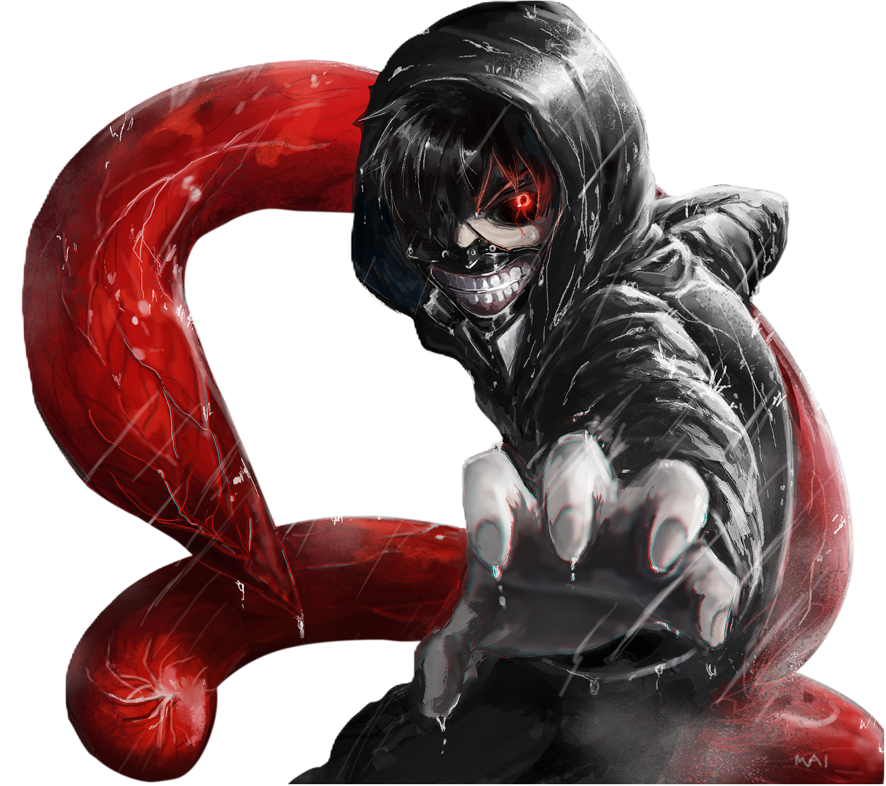

Ken Kaneki, um estudante que mal sobrevive a um encontro mortal
com Rize Kamishiro, uma mulher que se revela um ghoul; ghouls são
criaturas semelhantes a humanos que caçam e devoram carne humana,
com essa revelação Rize ataca...
